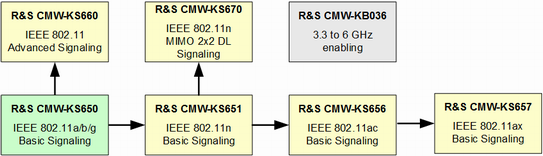

The WLAN signaling application emulates a WLAN device that communicates over WLAN with another WLAN device, the device under test (DUT).
- Access point (AP) in infrastructure mode (DUT is a WLAN station)
- Hotspot 2.0 access point (DUT is a WLAN station)
- WLAN station (DUT is an access point)
- WLAN station in IBSS mode (DUT is also a WLAN station in IBSS mode)
- Wi-Fi Direct group owner (DUT is a Wi-Fi Direct client)
The supported roles and WLAN IEEE 802.11 standards depend on the available options.
- R&S CMW-KS650
Basic signaling functionality for IEEE 802.11a/b/g - R&S CMW-KS651
Adds basic functionality for IEEE 802.11n, SISO - R&S CMW-KS656
Adds basic functionality for IEEE 802.11ac, SISO
A SUA is required, see "Features-Specific Hardware Requirements". - R&S CMW-KS657
Adds basic functionality for IEEE 802.11ax, SISO
R&S CMW with TRX160 is required, see "R&S CMW models". - R&S CMW-KS660
Adds advanced functionality, such as Hotspot 2.0, Wi-Fi Direct and WPA/WPA2 enterprise - R&S CMW-KS670
Adds IEEE 802.11n MIMO 2x2 in the 5-GHz band in AP mode
The generic option R&S CMW-KB036 "3.3 GHz to 6 GHz enabling" is required for RF frequencies above 3.3 GHz, for example for the WLAN 5-GHz band.
The following figure shows the option dependencies. Option R&S CMW-KS650 is always required.

- Operation as access point or station
- WPA/WPA2 personal
- Basic configuration (channel, TX burst power, SSID, MAC address, supported rates etc.)
- Frame rate control for management and data frames
- Test of connection setup
- Readout of MAC layer-related information received from the DUT
- RX burst power measurement
- IP packet generation (ICMP, UDP)
- Packet error rate (PER) tests
The basic signaling options R&S CMW-KS656/ -KS657 offer a subset of this test functionality for IEEE 802.11ac/ ax, see "Features-Specific Hardware Requirements".
- Operation only as access point
- IEEE 802.11ax signals only supported by R&S CMW with TRX160
You can measure WLAN signals with the "WLAN measurements" firmware application (option R&S CMW-KM650 plus enhancements).
For basic information about WLAN signals, refer to IEEE standard 802.11.